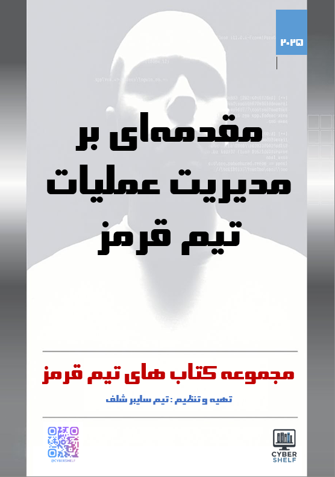

Red Team
مدیریت عملیات تیم قرمز
مشخصات، مخاطبان، محتوای آموزشی و سرفصلها را پیش از انتخاب بررسی کنید.

دانلود نسخه PDF کتاب
دانلودتیم سایبر شلف
تیم سایبر شلف
1404
1
103
وزیری
برنامهنویسان و علاقهمندان به عملیات تیم قرمز از مبتدی تا حرفهای
فارسی
معرفی و مطالعه کتاب
به کتاب «مقدمهای بر مدیریت عملیات تیم قرمز» – برنامهریزی، اجرا و هماهنگی عملیات تهاجمی با تمرکز بر نتایج واقعی – خوشآمدید.
این کتاب، حاصل تجربه و مطالعات عملی درزمینهٔ امنیت سایبری و مدیریت عملیات پیشرفته است. هدف آن ارائه چارچوبی ساختارمند برای متخصصان امنیت، رهبران فنی و کارشناسان حاکمیت است تا توانمندیهای تیم قرمز را در محیطهای سازمانی و تحت نظارت مقررات ایجاد یا ارتقا دهند.
در طول پنج فصل این کتاب، شما با دانش و ابزارهایی آشنا خواهید شد که توانمندی شما در طراحی، اجرای و نهادینهسازی کمپینهای تیم قرمز را به سطحی فراتر از بهرهبرداری صرف فنی میبرد. شما یاد خواهید گرفت چگونه کمپینها را بر اساس چارچوب MITRE ATT&CK و تهدیدات خاص صنعت خود طراحی کنید، الزامات قانونی و تطابق با استانداردها مانند TIBER-EU و DORA را در برنامهریزی و گزارش دهی رعایت کنید و عملیات را با اصول امنیت عملیاتی (OPSEC)، قوانین درگیری (RoE) و مدیریت چرخه عمر زیرساختها هماهنگ سازید.
علاوه بر این، اجرای شبیهسازیهای پیشرفته در محیطهای ابری و ترکیبی، عملیاتی سازی یافتهها به شکل بهبودهای کاربردی در تیمهای SOC، IR، GRC و مهندسی و ایجاد و ارزیابی بلوغ تیم قرمز از طریق نقشه راه و مدلهای توانمندی، از دیگر مفاهیمی است که در این کتاب به آن پرداخته میشود.
خوانندگان این کتاب با طراحی و دفاع از یک برنامه جامع کمپین تیم قرمز در قالب سناریوی نهایی، تجربه عملی و دانش لازم برای همسوسازی شبیهسازی مهاجم با ریسک تجاری، عمق فنی و الزامات قانونی را کسب خواهند کرد.
چه در حال راهاندازی یک تیم قرمز جدید باشید، چه بخواهید نقش راهبردی آن را تقویت کنید یا آزمونها را با الزامات مدیریتی و انطباقی هماهنگ سازید، این کتاب چارچوبها، رویکردها و تاکتیکهای لازم برای موفقیت شما را در اختیار خواهد گذاشت.
نکتهای که مایلم با شفافیت بیان کنم این است که بخش مهمی از محتوای کتاب با کمک یک مدل زبان بزرگ (LLM) آماده و سپس بازبینی و تکمیلشده است؛ موضوعی که فرصتی برای سرعت بخشیدن به تولید محتوا فراهم کرد و نشان میدهد چگونه میتوان از فناوریهای نوین در خدمت یادگیری بهره گرفت.
امیدوارم مطالعه این کتاب برای شما الهامبخش باشد و در مسیر حرفهایتان در حوزه امنیت تهاجمی، دیدگاهی تازه و مهارتهایی عملی به ارمغان بیاورد.
با احترام،
تیم سایبر شلف
این کتاب برای چه کسی مناسب است؟
برنامهنویسان و علاقهمندان به عملیات تیم قرمز از مبتدی تا حرفهای
پس از مطالعه چه چیزی یاد میگیرید؟
با مفاهیم، مسیر کار و موضوعات اصلی Red Team که در سرفصلهای همین صفحه آمدهاند آشنا میشوید.